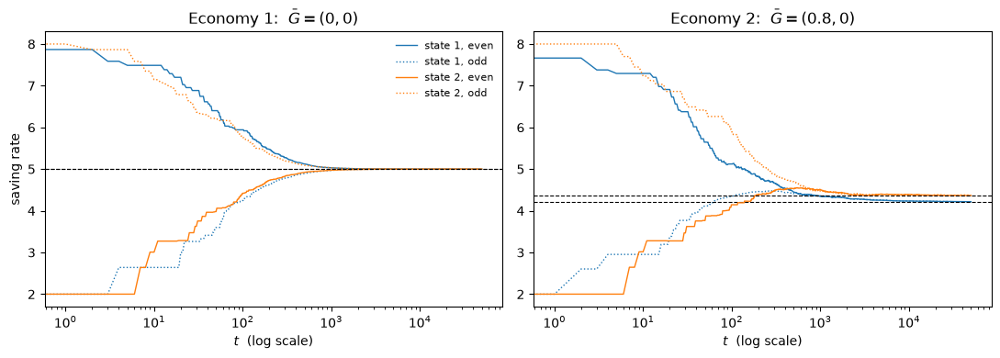
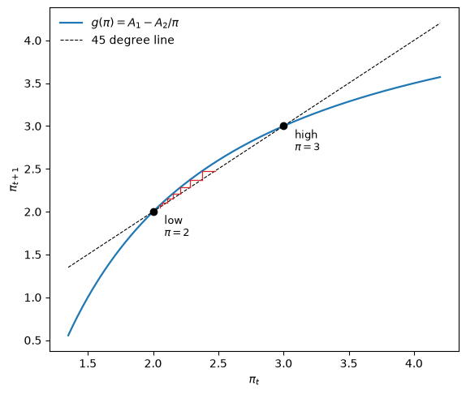
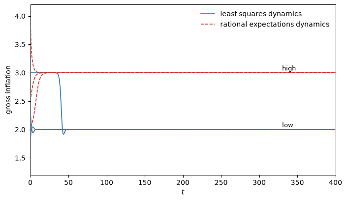
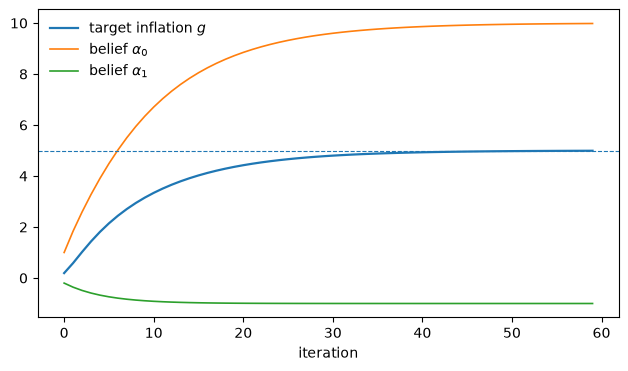
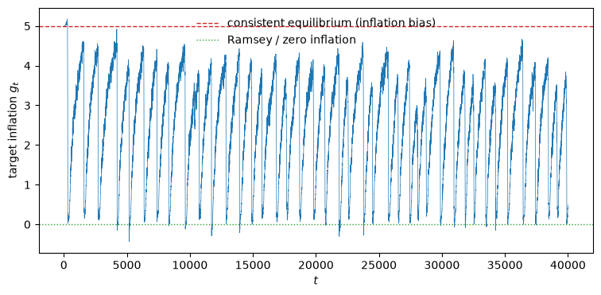
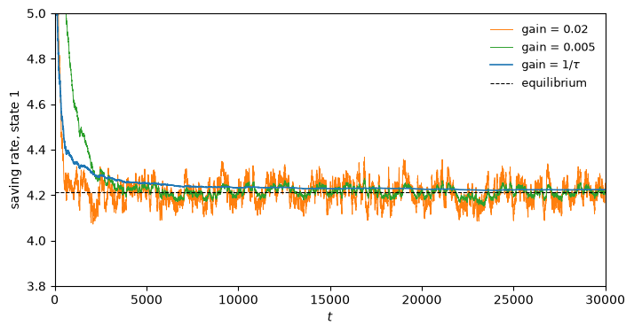
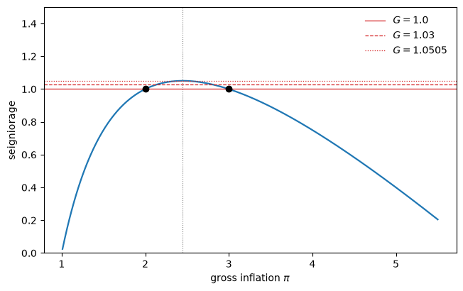

89. 世代交叠货币经济中的适应性主体#
除了 Anaconda 中已有的库之外，本讲座还需要以下库：
!pip install quantecon
89.1. 概述#
一种奇特的有限理性定义 介绍了一些具有多个理性预期均衡的货币经济模型。
本讲座采用其中之一——萨缪尔森的法定货币世代交叠模型，该模型曾被布莱恩特、华莱士等人用来研究通货膨胀融资——并将萨缪尔森那些按照价格水平均衡运动规律进行预测的主体，替换为不按此规律预测的”适应性”主体。
我们将出于两个不同的目的进行这一替换。
第一部分在模型中引入一个随机的政府赤字，并探讨接连不断的世代能否通过反复试错，作为一个社会最终收敛到某个理性预期均衡。
它们确实可以。
每一代人都观察前辈的经历，并使用罗宾斯-门罗递归，朝着改善效用的方向调整自己的储蓄决策。
只要时间足够长，经济就会收敛到我们独立计算出的平稳均衡。
这个练习也表明了学习速度对所要学习内容复杂度的敏感程度：一个很少出现的赤字状态被学习得很慢，因为相关观测数据到来得很慢。
第二部分去除了随机性，转向一个更尖锐的问题。
在恒定赤字的情况下，模型存在两个平稳均衡：一个是低通胀均衡，一个是高通胀均衡。
低通胀均衡在帕累托意义上优于另一个均衡。
在理性预期动态下，低通胀均衡是不稳定的，而高通胀均衡是稳定的：理论把经济推向了坏的结果。
而在最小二乘学习下，这种稳定性正好反转过来。
当 Marimon and Sunder [1993] 用付费人类被试将这个经济体作为实验室实验来运行时，被试的行为表现得像适应性模型，而不像理性预期模型。
这是 Sargent [1993] 中支持适应性动态确实在发挥选择机制作用的最有力证据，不过本杰明·本塔尔（Benjamin Bental）提出的一个反例对此有所调和，提醒我们不要断言适应性总能可靠地选出好的均衡。
随后我们以第三个应用收尾，其中的适应性主体是一个正在学习菲利普斯曲线的政府。
在这里，最小二乘学习选出的是坏的、高通胀均衡，但一个对自身模型抱有怀疑的政府却能逃逸到好的均衡，这一现象正是萨金特后来关于《美国通货膨胀的征服》研究的萌芽。
让我们先导入一些库。
import numpy as np
import pandas as pd
import quantecon as qe
import matplotlib.pyplot as plt
from scipy.optimize import fsolve
89.2. 经济环境#
该经济由生活两期的世代交叠主体构成。
在每个时点 \(t \geq 1\)，都会出生 \(N\) 个相同的主体，他们年轻时禀赋 \(w_1\) 单位的单一消费品，年老时禀赋 \(w_2\) 单位。
一个年轻主体对生命周期消费 \((c_1, c_2)\) 的偏好由 \(u(c_1) + u(c_2)\) 的期望值来排序。
我们全文使用对数效用，\(u(c) = \ln c\)。
政府通过印制货币来为其支出 \(G_t\) 融资，须满足预算约束
其中 \(H_t\) 是年轻人在 \(t\) 期持有并带入 \(t+1\) 期的货币存量，\(p_t\) 是价格水平。
货币是唯一的价值储藏手段，因此年轻主体的储蓄 \(s_t\) 完全采取实际余额的形式，市场出清要求
记 \(R_t = p_t / p_{t+1}\) 为货币在 \(t\) 期到 \(t+1\) 期之间的总回报率。
将 (89.1) 与 (89.2) 结合，可以得到一个我们将反复用到的关系：货币的回报率完全由储蓄行为和赤字所决定，
只有当下一代愿意吸纳未偿还存量加上新发行部分时，货币才能保值。
备注
(89.3) 值得稍作停留细想，因为正是它使得这个系统成为自我参照的系统，这一性质在 自指模型中的最小二乘学习 中有详细研究。
今天年轻人从其储蓄中获得的回报，取决于明天的年轻人愿意储蓄多少，而后者又取决于明天的年轻人预期能获得多少回报。
没有人的信念是关于某个外生过程的。
89.3. 第一部分：随机赤字#
现在让政府支出遵循一个马尔可夫链，
其取值范围是一个有限的水平列表 \(G = [\bar G_1, \ldots, \bar G_n]\)。
89.3.1. 平稳理性预期均衡#
在平稳均衡中，储蓄取决于当前的赤字状态，因此由一个 \(n \times 1\) 的向量 \(s = [s_1, \ldots, s_n]\) 来描述，而货币的回报率由一个 \(n \times n\) 的矩阵 \(R(i,j)\) 来描述。
一个观察到 \(G_t = \bar G_i\) 的年轻主体选择 \(s_i\) 以最大化
其一阶条件为
代入 (89.3)——在平稳均衡中它写作 \(R(i,j) = (s_j N - \bar G_j)/(s_i N)\)——就把 (89.4) 变成了一个仅含储蓄率的 \(n\) 个非线性方程组：
当且仅当 (89.5) 对每个 \(i\) 都存在满足 \(s_i \in (0, w_1)\) 的解时，平稳均衡才存在。
w1, w2, N = 20.0, 10.0, 1.0
def u_prime(c):
return 1 / c # log utility
def equilibrium_residual(s, G, P):
"Left minus right side of the equilibrium condition, one entry per deficit state."
n = len(s)
out = np.empty(n)
for i in range(n):
rhs = sum(u_prime(w2 + (s[j]*N - G[j])/N)
* (s[j]*N - G[j])/(s[i]*N)
* P[i, j] for j in range(n))
out[i] = u_prime(w1 - s[i]) - rhs
return out
def stationary_equilibrium(G, P, guess=4.0):
s = fsolve(equilibrium_residual, np.full(len(G), guess), args=(G, P))
R = np.array([[(s[j]*N - G[j])/(s[i]*N) for j in range(len(s))]
for i in range(len(s))])
return s, R
按照 Sargent [1993] 的做法，我们研究两个仅在政府支出过程上有所不同的经济体，其中 \(w_1 = 20\)，\(w_2 = 10\)，\(N = 1\)，因此 \(\bar G\) 是以每个年轻人计算的。
在第一个经济体中，赤字始终为零，且该链是一个公平的硬币过程。
G1, P1 = np.array([0.0, 0.0]), np.full((2, 2), 0.5)
s1, R1 = stationary_equilibrium(G1, P1)
print(f"saving rates {np.round(s1, 4)}")
print(f"returns\n{np.round(R1, 4)}")
saving rates [5. 5.]
returns
[[1. 1.]
[1. 1.]]
由于没有赤字需要融资，货币能保持其价值：主体在任一状态下都储蓄 \(5\)，且 \(R \equiv 1\)。
在第二个经济体中，状态1的赤字为 \(0.8\)，状态2的赤字为零，该链具有持久性。
G2 = np.array([0.8, 0.0])
P2 = np.array([[0.75, 0.25],
[0.50, 0.50]])
s2, R2 = stationary_equilibrium(G2, P2)
print(f"saving rates {np.round(s2, 4)} (Sargent reports 4.211, 4.364)")
print(f"returns\n{np.round(R2, 4)}")
print("Sargent reports [[0.81, 1.0362], [0.7817, 1.00]]")
saving rates [4.2111 4.3637] (Sargent reports 4.211, 4.364)
returns
[[0.81 1.0362]
[0.7817 1. ]]
Sargent reports [[0.81, 1.0362], [0.7817, 1.00]]
两者都与正文中报告的数值相符。
请注意 \(R\) 中的规律：每当政府即将出现赤字（第一列）时，货币的回报都较差，因为新发行的货币稀释了存量货币。
89.3.2. 连续世代的学习#
现在从主体那里撤去均衡这一信息。
我们仍假设主体知道自己的效用函数，并记得像自己一样的前辈的经历，但他们没有被告知回报的分布，而这恰恰是 (89.4) 所需要的对象。
相反，每一代人朝着已实现的经验所表明的更优方向，调整前辈的储蓄决策。
一个储蓄了 \(s\) 并获得回报 \(R\) 的主体，其已实现的生命周期效用为
其导数为
与均衡的联系在于：在理性预期均衡中，\(V'(s_i) = E_t U'(s_i)\)，\(V''(s_i) = E_t U''(s_i)\)，其中 \(E_t\) 是以 \(G_t = \bar G_i\) 为条件的。
因此，一个能够计算 \(E_t U'\) 的主体只需将其设为零即可完成决策。
而我们的主体做不到这一点，必须转而根据经验来估计它。
他们使用罗宾斯-门罗算法，逐状态地应用。
设 \(\tau_i\) 为到目前为止赤字状态 \(\bar G_i\) 被访问的次数，\(\gamma_\tau\) 为一个递减的增益序列。
规则为
\(M\) 累积一个对 \(E_t U''\) 的运行估计值，而储蓄规则则针对它采取一个牛顿步。
如果 \(\tau_i \to \infty\)，那么 \(M(i, \tau_i) \to E_i U''\)，\(s(i, \tau_i)\) 就会逼近 \(E_i U'(s_i) = 0\) 的解，而这恰好就是均衡条件 (89.4)。
该设定中有两个特征值得说明。
两类主体。 要评估一个储蓄决策，我们必须等到该主体消费的两个时期都已知晓，因此人口被分成”奇数”和”偶数”两个子序列。
奇数主体在奇数期重置其规则，且只从更早的奇数主体那里学习；偶数主体亦然。
这与第二部分中讨论的实验室实验所使用的手法相同。
投影机制。 (89.6) 中没有任何东西能阻止牛顿步把储蓄推到低于赤字水平，此时 (89.2) 就不存在正的价格水平，经济也就不复存在。
因此我们将 \(s\) 限制在一个存在均衡价格水平的区域内。
这类机制对于收敛定理也是必需的；自指模型中的最小二乘学习 详细讨论了投影机制。
def U_prime(s, R):
return -1/(w1 - s) + R/(w2 + s*R)
def U_double(s, R):
return -1/(w1 - s)**2 - R**2/(w2 + s*R)**2
def simulate(G, P, T=50_000, s0=None, seed=0, tau0=20, band=0.4):
"""
Overlapping generations learning a state-contingent saving rule.
Returns the history of saving rules (shape (T, 2, n): time, class, state)
and the realized returns.
"""
rng = np.random.default_rng(seed)
n = len(G)
s = np.array(s0, float)
M = np.array([[U_double(s[j, k], 1.0) for k in range(n)] for j in range(2)])
τ = np.zeros((2, n), int)
floor = G/N + band # projection facility: saving must cover the deficit
hist = np.empty((T, 2, n))
R_hist = np.full(T, np.nan)
i, prev = 0, None
for t in range(T):
j = t % 2 # which class is young this period
s_t = s[j, i]
if prev is not None: # last period's young now learn their return
j_p, i_p, s_p = prev
R = (N*s_t - G[i]) / (N*s_p) # the return on currency
R_hist[t-1] = R
τ[j_p, i_p] += 1
g = 1 / (τ[j_p, i_p] + tau0)
M[j_p, i_p] += g * (U_double(s_p, R) - M[j_p, i_p])
step = g * U_prime(s_p, R) / M[j_p, i_p]
s[j_p, i_p] = np.clip(s[j_p, i_p] - step, floor[i_p], w1 - 0.4)
prev = (j, i, s_t)
hist[t] = s
i = rng.choice(n, p=P[i])
return hist, R_hist
备注
这个模拟从不计算价格水平。
由于 (89.3) 完全用储蓄率和赤字来表达货币的回报率，模型的实际部分是自足的。
这不仅仅是一种便利：只要政府运行赤字，这些经济体中的名义货币存量就会无限增长，因此一个直接跟踪 \(H_t\) 和 \(p_t\) 的模拟，会在学习收敛之前就早早发生数值溢出。
89.3.3. 他们能找到均衡吗？#
start = [[8.0, 2.0],
[2.0, 8.0]] # deliberately far from equilibrium, and asymmetric
hist1, _ = simulate(G1, P1, s0=start)
hist2, _ = simulate(G2, P2, s0=start)
fig, axes = plt.subplots(1, 2, figsize=(11, 4), sharex=True)
for ax, hist, s_star, title in [(axes[0], hist1, s1, "Economy 1: $\\bar G = (0, 0)$"),
(axes[1], hist2, s2, "Economy 2: $\\bar G = (0.8, 0)$")]:
for k, colour in enumerate(['C0', 'C1']):
ax.plot(hist[:, 0, k], color=colour, lw=1, label=f"state {k+1}, even")
ax.plot(hist[:, 1, k], color=colour, lw=1, ls=':', label=f"state {k+1}, odd")
ax.axhline(s_star[k], color='k', lw=0.8, ls='--')
ax.set_xscale('log')
ax.set_xlabel("$t$ (log scale)")
ax.set_title(title)
axes[0].set_ylabel("saving rate")
axes[0].legend(frameon=False, fontsize=8)
plt.tight_layout()
plt.show()

图 89.1 Saving rates converge in both economies#
两个经济体都收敛了，而且两类主体虽然彼此互不学习，却都收敛到了同一条规则。
黑色虚线是先前从 (89.5) 计算出的均衡储蓄率，这是模拟中的任何主体都无法获知的对象。
rows = []
for T in (5_000, 50_000, 200_000):
h1, _ = simulate(G1, P1, T=T, s0=start)
h2, _ = simulate(G2, P2, T=T, s0=start)
rows.append([T, *h1[-1].mean(axis=0), *h2[-1].mean(axis=0)])
pd.DataFrame(rows, columns=["T", "econ 1 state 1", "econ 1 state 2",
"econ 2 state 1", "econ 2 state 2"]).set_index("T").round(4)
| econ 1 state 1 | econ 1 state 2 | econ 2 state 1 | econ 2 state 2 | |
|---|---|---|---|---|
| T | ||||
| 5000 | 5.0004 | 5.0005 | 4.2551 | 4.3938 |
| 50000 | 5.0000 | 5.0000 | 4.2172 | 4.3708 |
| 200000 | 5.0000 | 5.0000 | 4.2106 | 4.3635 |
print(f"rational expectations: economy 1 = {np.round(s1, 4)}, economy 2 = {np.round(s2, 4)}")
rational expectations: economy 1 = [5. 5.], economy 2 = [4.2111 4.3637]
收敛是缓慢的——这正是 \(1/\tau\) 增益所带来的代价——但确实是收敛，而且收敛到了正确的地方。
89.3.4. 需要告诉主体多少信息？#
上面的设定让主体针对每个赤字水平学习一个独立的储蓄率。
实际上，他们是逐个状态地以非参数方式学习策略函数 \(s = f(G)\)。
由于状态只有两个，这才是可行的。
萨金特强调这样做有两个缺点。
第一，很少被访问的状态被学习得很慢，因为相关观测到来得慢。
练习 89.1 把这一点具体化了。
第二，当状态数量很大时，每个状态一个参数的做法将变得难以处理。
计量经济学家的对策是采用一个参数化形式 \(s = f(G, \theta)\)，其中 \(\theta\) 维度较低，并用每一个观测值来估计它，从而用一个关于 \(\theta\) 的递归——由 \(\partial U/\partial \theta\) 驱动——取代 (89.6)。
这样做以近似为代价换来了速度：只有当参数族 \(f(\cdot, \theta)\) 中的某个成员支持某个理性预期均衡时，这种参数化学习方案才能收敛到该均衡。
否则，它所能做到的至多是收敛到某个近似均衡。
备注
正是在这一点上，学习模型与计算均衡的算法开始难以区分。
马塞特的参数化预期方法假设条件期望具有某种参数化形式，进行模拟，将实现的结果对该参数化形式做回归以更新系数，并不断迭代。
以递归形式写出，该算法就是一个与 (89.6) 形式相同的非线性最小二乘递归。
萨金特的总结是：“学习算法与均衡计算算法看起来彼此相像。”
均衡计算是由建模者运行的一种集中化学习算法；一个学习型经济则是由各主体运行的一种去中心化的均衡计算。
89.4. 第二部分：恒定赤字与两个稳态#
现在去掉随机性。
设政府为每个年轻人融资一笔恒定的赤字 \(G\)，效用仍如前所述为 \(\ln c_1 + \ln c_2\)。
在对价格水平具有完全预见的情况下，年轻人的储蓄为
其中 \(\pi_t\) 是总通货膨胀率，即货币回报率的倒数。
政府以实际值表示的预算约束为 \(h_t = h_{t-1}/\pi_{t-1} + G\)，其中 \(h_t = m_t / p_t\)，均衡要求 \(h_t = s_t\)。
在这两式之间消去 \(h\)，就得到一个关于通货膨胀率的自主差分方程，
平稳均衡就是 \(g\) 的不动点，由于 \(g\) 是一条双曲线，一般会有两个不动点。
我们使用 Marimon and Sunder [1993] 的”经济体7C”参数：\(w_1 = 6\)，\(w_2 = 1\)，\(G = 1\)。
w1_d, w2_d, G_d = 6.0, 1.0, 1.0
A1 = (w1_d + w2_d - 2*G_d) / w2_d
A2 = w1_d / w2_d
def g_map(π):
return A1 - A2/π
π_low, π_high = np.sort(np.roots([1, -A1, A2]))
print(f"A1 = {A1}, A2 = {A2}")
print(f"stationary gross inflation rates: {π_low} and {π_high}")
print(f" i.e. net inflation of {100*(π_low-1):.0f}% and {100*(π_high-1):.0f}% per period")
print(f"\nslope of g at the low rate: {A2/π_low**2:.4f} -> unstable under RE dynamics")
print(f"slope of g at the high rate: {A2/π_high**2:.4f} -> stable under RE dynamics")
A1 = 5.0, A2 = 6.0
stationary gross inflation rates: 2.0 and 3.0
i.e. net inflation of 100% and 200% per period
slope of g at the low rate: 1.5000 -> unstable under RE dynamics
slope of g at the high rate: 0.6667 -> stable under RE dynamics
结果正是如此：在理性预期动态下，低通胀平稳均衡是不稳定的，而高通胀均衡是稳定的。
π_grid = np.linspace(1.35, 4.2, 400)
fig, ax = plt.subplots(figsize=(6.5, 5.5))
ax.plot(π_grid, g_map(π_grid), lw=1.6, label=r"$g(\pi) = A_1 - A_2/\pi$")
ax.plot(π_grid, π_grid, 'k--', lw=0.8, label="45 degree line")
# cobweb the RE dynamics away from the low steady state
π = π_low + 0.05
for _ in range(7):
nxt = g_map(π)
ax.plot([π, π], [π, nxt], color='C3', lw=0.9)
ax.plot([π, nxt], [nxt, nxt], color='C3', lw=0.9)
π = nxt
for p, name in [(π_low, "low"), (π_high, "high")]:
ax.plot(p, p, 'ko', ms=6)
ax.annotate(f"{name}\n$\\pi = {p:.0f}$", (p, p), textcoords="offset points",
xytext=(10, -22), fontsize=9)
ax.set_xlabel(r"$\pi_t$")
ax.set_ylabel(r"$\pi_{t+1}$")
ax.legend(frameon=False, loc='upper left')
plt.show()

图 89.2 Rational expectations inflation dynamics#
红色的阶梯从低通胀稳态稍上方开始，径直远离它，一路走向高通胀稳态。
def re_path(π0, T=25):
path = [π0]
for _ in range(T):
nxt = g_map(path[-1])
path.append(nxt if nxt > 0 else np.nan)
return np.array(path)
pd.DataFrame({f"$\\pi_0 = {p}$": re_path(p) for p in (1.99, 2.01, 2.5, 4.0)}
).rename_axis("t").round(4).iloc[[0, 1, 2, 5, 10, 25]]
| $\pi_0 = 1.99$ | $\pi_0 = 2.01$ | $\pi_0 = 2.5$ | $\pi_0 = 4.0$ | |
|---|---|---|---|---|
| t | ||||
| 0 | 1.9900 | 2.0100 | 2.5000 | 4.0000 |
| 1 | 1.9849 | 2.0149 | 2.6000 | 3.5000 |
| 2 | 1.9772 | 2.0222 | 2.6923 | 3.2857 |
| 5 | 1.9187 | 2.0712 | 2.8836 | 3.0705 |
| 10 | 0.6693 | 2.3681 | 2.9830 | 3.0087 |
| 25 | NaN | 2.9961 | 3.0000 | 3.0000 |
从略低于低稳态的位置起步，经济会崩溃（(89.8) 所隐含的价格水平变为负值）；从略高于低稳态的位置起步，经济则收敛到 \(\pi = 3\)。
这一点之所以重要，是由于两个均衡的排序关系。
低通胀均衡的比较静态分析是”古典的”：提高赤字 \(G\) 会降低 \(A_1\)，从而提高低通胀的平稳通胀率。
高通胀均衡的比较静态分析则相反，因为该经济处于拉弗曲线中通货膨胀税的错误一侧；参见 练习 89.3。
而低通胀均衡在帕累托意义上优于该模型的所有其他均衡，无论是否为平稳均衡。
因此，理性预期动态将经济推离帕累托最优结果，而货币理论中大多数古典教条都依赖于选取那些恰恰被这种动态所排斥的均衡。
89.4.1. 最小二乘动态#
Marcet and Sargent [1989] 研究了这个经济体的一个版本，其中主体不具备完全预见能力，而是做回归。
每一期他们都将价格水平对其自身的滞后值做回归，并用拟合的斜率作为对总通胀率的预测，
然后按照 (89.7) 储蓄 \(s_t = (w_1 - w_2 \beta_t)/2\)。
由于 \(\beta_t\) 只使用到 \(t-1\) 期为止的数据，所以不存在同期性问题：信念决定储蓄，储蓄决定价格水平，而新的价格水平进入下一期的回归。
将 \(\beta_t\) 写成
就能看出这个估计量在做什么：它是过去已实现通胀率的加权平均，权重与 \(p_{s-1}^2\) 成比例。
这种形式也使得该递归易于计算。
价格水平呈几何增长，因此这两个求和很快就会溢出，但如果我们在每一步都用最新的权重对两者进行重新标度，那么一切都保持在同一数量级上。
def ls_dynamics(π_init, T=3000):
"""
Least squares dynamics. Carries the two regression sums rescaled by the
newest p^2, so nothing overflows even though the price level does not stop
growing. Returns (beliefs, realized inflation, survived?).
"""
s_prev = (w1_d - w2_d*π_init) / 2
num, den, π_last = π_init, 1.0, π_init
betas, infl = [], []
for t in range(T):
β = num / den
s_t = (w1_d - w2_d*β) / 2
if s_t <= G_d or not np.isfinite(s_t):
return np.array(betas), np.array(infl), False # no positive price level
π_t = s_prev / (s_t - G_d) # realized gross inflation
num = num/π_last**2 + π_t
den = den/π_last**2 + 1.0
π_last, s_prev = π_t, s_t
betas.append(β)
infl.append(π_t)
return np.array(betas), np.array(infl), True
rows = []
for π0 in (1.2, 1.5, 1.9, 2.0, 2.1, 2.5, 2.9, 3.0):
b, infl, ok = ls_dynamics(π0)
rows.append([π0, b[-1], infl[-1], "yes" if ok else "no"])
pd.DataFrame(rows, columns=["initial belief $\\pi_0$", "belief $\\beta_T$",
"realized $\\pi_T$", "survived"]).round(5)
| initial belief $\pi_0$ | belief $\beta_T$ | realized $\pi_T$ | survived | |
|---|---|---|---|---|
| 0 | 1.2 | 2.0 | 2.0 | yes |
| 1 | 1.5 | 2.0 | 2.0 | yes |
| 2 | 1.9 | 2.0 | 2.0 | yes |
| 3 | 2.0 | 2.0 | 2.0 | yes |
| 4 | 2.1 | 2.0 | 2.0 | yes |
| 5 | 2.5 | 2.0 | 2.0 | yes |
| 6 | 2.9 | 2.0 | 2.0 | yes |
| 7 | 3.0 | 2.0 | 2.0 | yes |
89.4.2. 稳定性的反转#
在表中列出的每一个初始信念下，最小二乘学习都收敛到低通胀均衡，包括从 \(\pi_0 = 3.0\) 出发的情形——而 \(\pi = 3\) 正是理性预期动态所收敛向的稳态。
fig, ax = plt.subplots(figsize=(8, 4.5))
for π0 in (1.5, 2.5, 3.0):
_, infl, _ = ls_dynamics(π0, T=400)
ax.plot(infl, color='C0', lw=1.2,
label="least squares dynamics" if π0 == 1.5 else None)
for π0 in (2.05, 2.5, 4.0):
ax.plot(re_path(π0, 400), color='C3', lw=1.2, ls='--',
label="rational expectations dynamics" if π0 == 2.05 else None)
ax.axhline(π_low, color='k', lw=0.8, ls=':')
ax.axhline(π_high, color='k', lw=0.8, ls=':')
ax.annotate("low", (330, π_low + 0.04), fontsize=9)
ax.annotate("high", (330, π_high + 0.04), fontsize=9)
ax.set_xlim(0, 400)
ax.set_ylim(1.2, 4.2)
ax.set_xlabel("$t$")
ax.set_ylabel("gross inflation")
ax.legend(frameon=False)
plt.show()

图 89.3 Least squares and rational expectations inflation paths#
这两族路径朝着相反的方向运行。
这个边界是精确的：只要初始信念不超过 \(\pi_0 = 3\)（含 \(\pi_0 = 3\)），最小二乘学习就会收敛到 \(\pi = 2\)，而超过这一值之后，经济就根本不存在均衡价格水平。
lo, hi = 3.0, 3.2
for _ in range(40): # bisect for the edge of the basin
mid = (lo + hi) / 2
lo, hi = (mid, hi) if ls_dynamics(mid)[2] else (lo, mid)
print(f"least squares dynamics survive for initial beliefs up to {lo:.6f}")
print(f"the rational-expectations-stable steady state is {π_high}")
least squares dynamics survive for initial beliefs up to 3.000000
the rational-expectations-stable steady state is 3.0
理性预期动态选定为那个稳定稳态的均衡，恰好正是学习动态朝向另一个均衡的吸引域边界。
为什么会出现这种反转？
在完全预见下，一个略高于 \(\pi_{\text{low}}\) 的信念会被验证并放大——映射 \(g\) 在该处的斜率为 \(1.5\)。
而在最小二乘法下，信念是一段长期已实现通胀率历史的加权平均，这种平均化会把预测拉回下方。
高稳态对前瞻性动态是稳定的，而对后顾性动态是排斥的。
Bruno and Fischer [1990] 在一个密切相关的模型中发现了同样的反转，只不过他们用的是弗里德曼式的适应性预期而非最小二乘法，因此这一结果并不依赖于具体的估计方法细节。
89.4.3. 马里蒙与桑德的实验#
哪一组动态更能描述人的行为？
Marimon and Sunder [1993] 构建了一个实验室经济体来寻找答案。
固定数量的付费被试被指派为这个模型精确实现中的”年轻人”和”老年人”角色。
每一期，年轻人提交一份供给表，表明他们愿意以何种价格向老年人提供多少产出以换取货币，实验者据此让市场对老年人和政府的需求出清。
暂时闲置的被试参加一个预测游戏，该游戏本身也设有现金奖励，因此该实验直接记录了驱动经济运行的价格预期。
会话的长度对被试而言是未知的，但受公开宣布的规则支配，从被试的角度来看，这使得该经济等价于一个永不结束的经济。
这里有两个重要发现。
第一，实验中的通胀路径被收敛到低平稳通胀率的最小二乘动态所近似的程度，要远远好于被收敛到高通胀率的理性预期动态所近似的程度。
这一模式在他们所有的经济体中都成立。
第二，闲置被试的预测误差，其大小与使用同样数据的最小二乘预测者所会犯的误差相当。
被试们所做的并非什么怪异之事，他们所做的大致就是适应性模型所说的那样。
理论认为不稳定的那个均衡，恰恰是算法和人类都选择了的均衡。
备注
实验证据并非甄别这一问题的唯一途径。
İmrohoroğlu [1993] 用德国恶性通胀数据估计了该模型的一个理性预期版本，得到了相反的结果：他所估计出的均衡沿着拉弗曲线的坏的一侧滑向高平稳通胀率，这与适应性动态所选出的均衡不一致。
89.4.4. 一个警示#
人们容易得出这样的结论：适应性动态总能可靠地选出帕累托占优的均衡。
萨金特提供了一个反例，这是本杰明·本塔尔向他展示的，其基础是 Brock [1974] 货币进入效用函数模型的一个特殊情形。
一个无限期存活的家庭最大化 \(\sum_t \beta^t (\ln c_t + \gamma \ln(m_t/p_t))\)，须服从一系列预算约束，而政府通过印制货币为固定支出 \(g > 0\) 融资。
在参数限制条件 \(\gamma(y - g) > g\) 下，该模型具有唯一的平稳均衡，其总通胀率为
它具有随赤字上升而上升的古典性质。
γ_b, β_b, y_b = 1.0, 1/1.05, 11.0
def brock_π(g):
return ((y_b - g)*γ_b - β_b*g) / ((y_b - g)*γ_b - g)
pd.DataFrame({
"$g$": [0.5, 1.0, 1.5, 2.0],
"restriction $\\gamma(y-g) > g$": [γ_b*(y_b - g) > g for g in (0.5, 1.0, 1.5, 2.0)],
"stationary $\\pi$": [brock_π(g) for g in (0.5, 1.0, 1.5, 2.0)],
"return on currency $1/\\pi$": [1/brock_π(g) for g in (0.5, 1.0, 1.5, 2.0)],
}).round(5)
| $g$ | restriction $\gamma(y-g) > g$ | stationary $\pi$ | return on currency $1/\pi$ | |
|---|---|---|---|---|
| 0 | 0.5 | True | 1.00238 | 0.99762 |
| 1 | 1.0 | True | 1.00529 | 0.99474 |
| 2 | 1.5 | True | 1.00893 | 0.99115 |
| 3 | 2.0 | True | 1.01361 | 0.98658 |
但该模型同时还存在一个由初始价格水平索引的非平稳均衡连续统，这些初始价格水平低于该平稳均衡的价格水平，在所有这些均衡中，总通胀率都收敛到 \(\beta\)——也就是说，经济最终陷入通货紧缩，货币回报率趋近于 \(1/\beta = 1.05\)，实际余额则不断膨胀。
这些均衡之所以存在，是因为由 \(\gamma \ln(m/p)\) 所隐含的货币需求对回报率的弹性极高，以至于即使政府通过通货紧缩向货币支付利息，也仍能筹集到足够的铸币税来为 \(g\) 融资。
在这里应用最小二乘学习会选出古典的平稳均衡，正如在世代交叠模型中那样。
区别在于福利排序：在布罗克模型中，所有非平稳均衡都在帕累托意义上优于学习所选出的古典平稳均衡。
因此最小二乘动态可靠地选出古典均衡。
但这个均衡是否为好的均衡，则是另一个问题，其答案取决于具体模型。
89.5. 一个学习菲利普斯曲线的政府#
到目前为止的例子都是把适应性家庭放入一个货币经济中。
我们以一个应用作为收尾，其中适应性主体是政府，它学习一个可据以采取行动的计量经济学关系。
这里的环境与世代交叠模型不同——这是一个菲利普斯曲线经济——但其机制是相同的：一个主体做回归，据此采取行动，从而帮助生成它正在拟合的那些数据本身。
这个例子还有另一层重要意义。
它是 Sargent [1993] 中最直接催生后续研究的例子：Sims [1988] 和 Chung [1990] 对其进行了研究，并促使萨金特提出了 Sargent [1999] 中的逃逸动态模型，即《美国通货膨胀的征服》，菲利普斯曲线相关讲座 对此有深入研究。
89.5.1. 关于战后通货膨胀的两种叙事#
关于二战后美国通货膨胀兴衰有一种广为人知的说法。
在这种说法中，私人部门始终具有理性预期，并理解自然率假说，而政府在一段时间里错误地相信存在一条可利用的菲利普斯曲线，即通胀与失业之间存在持久的权衡关系。
政府用20世纪60年代的数据估计菲利普斯曲线，看到了一种权衡关系，便试图用更高的通胀来换取更低的失业率。
结果是通胀升高，而就业方面却没有任何持久的收益：正如自然率假说所预言的那样，菲利普斯曲线不利地向上移动了。
但也有一种反叙事，由当时拟合菲利普斯曲线的经济学家们讲述。
他们辩称，他们所用的程序是适应性的，能够足够迅速地察觉到这种不利的移动，从而给出合理的建议，因此不一定会误导政府。
下面这个模型的优点在于，单一的设定就能同时容纳这两种叙事，由一个参数来决定究竟哪一种叙事会上演。
89.5.2. 模型#
通货膨胀被分解为预期部分和非预期部分，
其中 \(g_{t-1}\) 是公众预期的通胀（也是政府所控制的），\(\eta_t\) 是公众的预测误差，与更早的信息正交。
真实的菲利普斯曲线是自然率曲线：只有意外部分 \(\eta_t\) 才会影响失业率：
政府并不知道这一点。
它相信失业取决于通胀的水平，因此拟合了以下非预期性回归
每一期它都在其所认知的模型约束下最小化 \(\tfrac12 \mathbb{E}(U_t^2 + \pi_t^2)\)，这产生了如下短视目标
该系统是自我参照的：政府的信念 \(\alpha\) 通过 (89.12) 决定其政策 \(g\)；该政策塑造了 \((\pi, U)\) 的联合分布；而这一分布正是政府的回归 (89.11) 所估计的对象。
U_star, θ_pc = 5.0, 1.0 # natural rate 5%, Phillips slope
σ_η, σ_u = 0.3, 0.3 # inflation-surprise and unemployment shocks
def govt_target(α):
"Government's myopic optimal target inflation."
α0, α1 = α
return -α0 * α1 / (1 + α1**2)
89.5.3. 一致性均衡#
一个自我确认的、或称一致性的均衡，是一个信念向量 \(\alpha\)，其所引出的政策所产生的数据经过回归后，会返回同样的 \(\alpha\)。
在恒定政策 \(g\) 下，意外部分 \(\eta_t\) 是唯一使通胀围绕其均值波动的因素，因此对 \(U\) 对 \(\pi\) 的总体回归，其斜率恰为 \(-\theta\)，截距为 \(U^* + \theta g\)。
将该不动点与决策规则 (89.12) 联立求解，就得到基德兰和普雷斯科特的时间一致性结果，
α_consistent = np.array([(1 + θ_pc**2) * U_star, -θ_pc])
g_consistent = θ_pc * U_star
print(f"consistent equilibrium beliefs α = {α_consistent}, target inflation g = {g_consistent}")
print(f"optimal (Ramsey) outcome: target inflation g = 0")
consistent equilibrium beliefs α = [10. -1.], target inflation g = 5.0
optimal (Ramsey) outcome: target inflation g = 0
这就是通胀偏差。
政府以 \(\theta U^*\) 的速率制造通胀，却一无所获：由于只有意外冲击才能影响失业率，无论怎样，平均失业率都是 \(U^*\)。
假如政府理解了真实模型 (89.10)，它本应选择 \(g = 0\)：同样的失业率，却没有任何通货膨胀。
89.5.4. 恒定系数信念：学习通胀偏差#
假设政府相信自己的系数是恒定的，并用最小二乘法进行估计，每期做少量更新。
最小二乘学习平均而言所遵循的确定性路径——即其平均动态——将信念推向由当前政策所诱发的那种回归结果。
def induced_beliefs(α):
"The OLS fit that the current beliefs' policy would induce in a stationary sample."
g = govt_target(α)
return np.array([U_star + θ_pc * g, -θ_pc]) # slope is exactly -θ
def mean_dynamics(α0=(0.0, 0.0), lr=0.2, T=60):
α = np.array(α0, float)
path = np.empty((T, 3))
for t in range(T):
α = α + lr * (induced_beliefs(α) - α)
path[t] = [α[0], α[1], govt_target(α)]
return path
path = mean_dynamics()
fig, ax = plt.subplots(figsize=(7.5, 4))
ax.plot(path[:, 2], 'C0', lw=1.6, label="target inflation $g$")
ax.plot(path[:, 0], 'C1', lw=1.2, label=r"belief $\alpha_0$")
ax.plot(path[:, 1], 'C2', lw=1.2, label=r"belief $\alpha_1$")
ax.axhline(g_consistent, color='C0', ls='--', lw=0.8)
ax.set_xlabel("iteration")
ax.legend(frameon=False)
plt.show()

图 89.4 Least squares learning converges to the inflation bias#
最小二乘学习径直把政府带入了一致性均衡：信念稳定在 \(\alpha = ((1+\theta^2)U^*, -\theta)\)，目标通胀率稳定在 \(\theta U^* = 5\)。
政府一期又一期地持续制造通胀，其速率对它没有任何好处，因为它自己的政策不断产生的数据，恰恰确认了它所相信的那种权衡关系。
89.5.5. 随机系数信念：逃向最优结果#
Sims [1988] 和 Chung [1990] 随后提出了一个问题：如果政府对自己的系数是否恒定不太确定，会发生什么？
他们让政府怀疑这些系数可能会漂移——即 \(\alpha\) 服从随机游走——并使用卡尔曼滤波器来估计它们，该滤波器会对旧数据打折，更看重近期数据。
这是一种恒定增益算法：它并不使用最终会使估计值冻结的 \(1/t\) 增益，而是永远保持一个固定的增益，因此政府永远不会停止关注刚刚发生的事情。
def constant_gain(T=40_000, gain=0.02, seed=1):
"Government estimates a drifting-coefficient Phillips curve; returns target inflation g_t."
rng = np.random.default_rng(seed)
α = α_consistent.copy() # start at the inflation bias
R = np.eye(2)
g_path = np.empty(T)
for t in range(T):
g = govt_target(α)
η = σ_η * rng.standard_normal()
π = g + η
U = U_star - θ_pc * η + σ_u * rng.standard_normal() # true Phillips curve
x = np.array([1.0, π])
R = R + gain * (np.outer(x, x) - R)
α = α + gain * np.linalg.solve(R, x * (U - x @ α))
g_path[t] = g
return g_path
g_path = constant_gain()
fig, ax = plt.subplots(figsize=(9, 4))
ax.plot(g_path, lw=0.5)
ax.axhline(g_consistent, color='C3', ls='--', lw=1, label="consistent equilibrium (inflation bias)")
ax.axhline(0, color='C2', ls=':', lw=1, label="Ramsey / zero inflation")
ax.set_xlabel("$t$")
ax.set_ylabel("target inflation $g_t$")
ax.legend(frameon=False)
plt.show()

图 89.5 Constant-gain learning and recurrent escapes to zero inflation#
采用恒定增益的政府不会稳定在通胀偏差处。
它一路攀升接近该偏差，随后突然逃逸至零通胀，然后又向上漂移，接着再次逃逸，如此循环往复，呈现出一种锯齿状规律。
其机制正是西姆斯和钟所指出的那种机制。
由于政府对旧数据打了折扣，一连串通胀意外较小、且失业率无论通胀高低都保持在 \(U^*\) 附近的观测，很快就使政府相信那种权衡关系并不存在，于是它不再利用一个自己已不再相信的权衡关系，通胀随之向零回落。
正是这种愿意考虑系数可能漂移的态度，使得政府无需经历一段长时间的通胀，就能学到自然率假说的真相。
逃逸发生的频率取决于增益——即政府对自身模型的怀疑程度——而这恰恰是 Sims [1988] 发现的用于在两种叙事之间做出选择的参数。
较小的增益使经济保持在通胀偏差附近；较大的增益则更频繁地把经济送向最优结果（参见 练习 89.4）。
89.5.6. 从逃逸动态到《美国通货膨胀的征服》#
这两种机制正是我们最初所讲的两种叙事的形式化表达。
一致性均衡路径就是自然率的叙事：一个信任其错误设定模型的政府持续制造通胀，并陷入其中。
逃逸路径则是反叙事：一个对模型变化保持警觉的政府察觉到了那种不佳的权衡关系，并从中抽身而退。
这正是一大批文献的源头。
Sims [1988] 和 Chung [1990] 表明，该模型既能同时容纳这两种叙事，而且——就钟的研究而言——还能在战后美国数据上被计量经济学地估计出来，从而为模型内部的政府赋予了一个真实的估计程序。
他们的工作促使 Sargent [1999] 提出了《美国通货膨胀的征服》中的逃逸路径模型，其中从高通胀纳什均衡反复逃向拉姆齐结果，提供了一种关于美国通货膨胀在20世纪80年代初究竟是如何被征服的理论。
QuantEcon 讲座 逃离纳什通胀 和 适应性学习与逃逸动态 全面阐述了该模型及其逃逸动态；上面的锯齿图只是其研究内容的初步一瞥。
89.6. 结语#
第一部分表明，一个由适应性主体构成的系统能够找到一个它从未被告知过的理性预期均衡，并清楚地展现了环境的复杂程度对学习速度的支配作用：一个很少出现的赤字状态被学习得很慢，而一个庞大的状态空间则迫使人们采用参数化的捷径，而这可能使均衡完全无法企及。
第二部分展示了更强的结果。
在模型存在两个均衡的情况下，学习动态不仅仅是找到其中一个均衡；它们系统性地挑出了那个被理性预期动态所排斥的均衡，而实验室被试的选择也是一样的。
这是 Sargent [1993] 中支持把适应性动态视为一种均衡选择机制的最有力例证。
布罗克反例标出了这一论断的界限。
这种选择是关于算法本身的一个事实，而非福利定理，萨金特对由此产生的不安直言不讳：
我知道，既怀疑实时动态，却又保留由它们所选出的均衡，这在逻辑上是不一致的。我承认，我对第六章所述货币模型中所进行的那种选择所抱有的偏爱，部分源于我先入为主的信念，即所选出的均衡在我看来是合理的。
菲利普斯曲线的应用从两个方面进一步凸显了这一点。
它表明，哪种学习方案能找到好的结果是依赖于具体模型的：在这里，最小二乘法走向了坏的均衡，而恒定增益政府——那个永不停止怀疑的政府——才逃向了好的均衡。
而且它使增益成为关注的对象，预示了 Sargent [1999] 在 逃离纳什通胀 和 适应性学习与逃逸动态 中所展开的逃逸动态研究。
人工智能主体中作为交换媒介的货币 沿着不同的方向发展了选择这一思想，进入了一个竞争均衡不是高通胀与低通胀之别、而是不同货币制度之别的场景：即哪种商品会成为货币。
89.7. 练习#
练习 89.1
由于主体针对每个赤字状态学习一个独立的储蓄率，他们只能以该状态出现的速度来学习该状态。
比较两个仅在转移矩阵上有所不同、其余均为 \(\bar G = (0.8, 0)\) 的经济体：一个是两个状态等可能，另一个是高赤字状态很少出现。
对每种情形，计算平稳均衡，运行学习模拟，并报告每个状态所学到的储蓄率与其目标值相差多远，同时报告该状态被访问的频率。
解答 练习 89.1
G_ex = np.array([0.8, 0.0])
cases = {"equally likely": np.array([[0.5, 0.5], [0.5, 0.5]]),
"high deficit rare": np.array([[0.5, 0.5], [0.03, 0.97]])}
rows = []
for name, P in cases.items():
s_star, _ = stationary_equilibrium(G_ex, P)
ergodic = qe.MarkovChain(P).stationary_distributions[0]
hist, _ = simulate(G_ex, P, T=30_000, s0=start)
learned = hist[-1].mean(axis=0)
for k in (0, 1):
rows.append([name, k+1, ergodic[k], s_star[k], learned[k],
abs(learned[k] - s_star[k])])
pd.DataFrame(rows, columns=["chain", "state", "ergodic prob.",
"equilibrium $s_i$", "learned $s_i$", "error"]).round(4)
| chain | state | ergodic prob. | equilibrium $s_i$ | learned $s_i$ | error | |
|---|---|---|---|---|---|---|
| 0 | equally likely | 1 | 0.5000 | 4.4965 | 4.5031 | 0.0066 |
| 1 | equally likely | 2 | 0.5000 | 4.4965 | 4.5006 | 0.0041 |
| 2 | high deficit rare | 1 | 0.0566 | 4.6828 | 4.6994 | 0.0167 |
| 3 | high deficit rare | 2 | 0.9434 | 4.9646 | 4.9662 | 0.0016 |
当两个状态等可能出现时，两条储蓄规则被学习得同样好。
而当高赤字状态只出现约百分之六的时间时，其规则的误差要比常见状态规则的误差大一个数量级，尽管两者都已经历了30000个日历期的时间来稳定下来。
萨金特的评论值得牢记：从无条件预期效用的角度来看，未能学会在一个很少被访问的状态下该怎么做，可能付出的代价非常小。
学习缓慢所付出的代价并不与误差的大小成正比。
还要注意的是，改变转移矩阵也会改变均衡本身——关于赤字持续性的信念会直接反馈进 (89.5)——因此这种比较必须针对每条链分别重新计算目标值。
练习 89.2
增益序列 \(\gamma_\tau = 1/\tau\) 正是使 (89.6) 收敛的关键所在。
一个怀疑环境可能存在漂移的主体，会转而使用恒定增益，永远更看重近期经验。
修改该模拟以使用恒定增益，并描述储蓄规则的极限行为会发生什么变化。
将增益为 \(0.02\) 和 \(0.005\) 的情形与 \(1/\tau\) 的基准进行比较。
解答 练习 89.2
def simulate_constant_gain(G, P, gain, T=30_000, s0=None, seed=0, band=0.4):
rng = np.random.default_rng(seed)
n = len(G)
s = np.array(s0, float)
M = np.array([[U_double(s[j, k], 1.0) for k in range(n)] for j in range(2)])
floor = G/N + band
hist = np.empty((T, 2, n))
i, prev = 0, None
for t in range(T):
j = t % 2
s_t = s[j, i]
if prev is not None:
j_p, i_p, s_p = prev
R = (N*s_t - G[i]) / (N*s_p)
M[j_p, i_p] += gain * (U_double(s_p, R) - M[j_p, i_p])
step = gain * U_prime(s_p, R) / M[j_p, i_p]
s[j_p, i_p] = np.clip(s[j_p, i_p] - step, floor[i_p], w1 - 0.4)
prev = (j, i, s_t)
hist[t] = s
i = rng.choice(n, p=P[i])
return hist
rows = []
for label, hist in [("gain = 0.02", simulate_constant_gain(G2, P2, 0.02, s0=start)),
("gain = 0.005", simulate_constant_gain(G2, P2, 0.005, s0=start)),
("gain = 1/τ", simulate(G2, P2, T=30_000, s0=start)[0])]:
tail = hist[-5_000:].mean(axis=1) # average the two classes
rows.append([label, *tail.mean(axis=0), *tail.std(axis=0)])
pd.DataFrame(rows, columns=["", "mean $s_1$", "mean $s_2$",
"s.d. $s_1$", "s.d. $s_2$"]).set_index("").round(5)
| mean $s_1$ | mean $s_2$ | s.d. $s_1$ | s.d. $s_2$ | |
|---|---|---|---|---|
| gain = 0.02 | 4.20862 | 4.36167 | 0.04089 | 0.04015 |
| gain = 0.005 | 4.20937 | 4.34929 | 0.01391 | 0.02159 |
| gain = 1/τ | 4.22312 | 4.37010 | 0.00057 | 0.00098 |
fig, ax = plt.subplots(figsize=(8, 4))
for gain, colour in [(0.02, 'C1'), (0.005, 'C2')]:
h = simulate_constant_gain(G2, P2, gain, s0=start)
ax.plot(h[:, 0, 0], color=colour, lw=0.7, label=f"gain = {gain}")
h, _ = simulate(G2, P2, T=30_000, s0=start)
ax.plot(h[:, 0, 0], color='C0', lw=1.2, label=r"gain = $1/\tau$")
ax.axhline(s2[0], color='k', lw=0.8, ls='--', label="equilibrium")
ax.set_xlim(0, 30_000)
ax.set_ylim(3.8, 5.0)
ax.set_xlabel("$t$")
ax.set_ylabel("saving rate, state 1")
ax.legend(frameon=False, fontsize=9)
plt.show()

恒定增益规则并不收敛。
它们会稳定在均衡附近的一个邻域内，然后在其中永远来回抖动，这是因为每一个新的观测值总是被赋予相同的权重，因此估计值永远不会停止移动。
减小增益能收窄这个带宽，但无法消除它。
只有一个衰减到零的增益——如 \(1/\tau\)——才能带来向单一点的收敛，这也正是为什么这些系统的收敛定理都要求增益如此。
而恒定增益主体所换来的，是适应性：如果赤字过程发生变化，\(1/\tau\) 主体几乎不会察觉，而恒定增益主体则会跟踪这一变化。
这种权衡在这整个文献中反复出现。
练习 89.3
高通胀稳态处于”拉弗曲线错误一侧”这一论断可以被精确化。
在一个总通胀率为 \(\pi\) 的平稳均衡中，实际余额为 \(h = (w_1 - w_2\pi)/2\)，政府征收铸币税 \(h(1 - 1/\pi)\)。
绘制铸币税作为 \(\pi\) 的函数的图像，标出两个平稳均衡，并利用该图解释为何提高 \(G\) 会提高低平稳通胀率，却会降低高平稳通胀率，以及当 \(G\) 过大时会发生什么。
解答 练习 89.3
def seigniorage(π):
return (w1_d - w2_d*π)/2 * (1 - 1/π)
π_grid = np.linspace(1.01, 5.5, 500)
peak = π_grid[np.argmax(seigniorage(π_grid))]
fig, ax = plt.subplots(figsize=(7.5, 4.5))
ax.plot(π_grid, seigniorage(π_grid), lw=1.6)
for G_try, style in [(1.0, '-'), (1.03, '--'), (1.0505, ':')]:
ax.axhline(G_try, color='C3', lw=0.9, ls=style, label=f"$G = {G_try}$")
ax.plot([π_low, π_high], [seigniorage(π_low), seigniorage(π_high)], 'ko', ms=6)
ax.axvline(peak, color='gray', lw=0.8, ls=':')
ax.set_xlabel(r"gross inflation $\pi$")
ax.set_ylabel("seigniorage")
ax.set_ylim(0, 1.5)
ax.legend(frameon=False)
plt.show()
print(f"peak of the Laffer curve at π = {peak:.4f}, raising {seigniorage(peak):.4f}")
print(f"the two steady states raise {seigniorage(π_low):.4f} and {seigniorage(π_high):.4f}")

peak of the Laffer curve at π = 2.4497, raising 1.0505
the two steady states raise 1.0000 and 1.0000
两个平稳均衡是通货膨胀税拉弗曲线与所需收入 \(G\) 相交的两个通胀率，分别位于曲线峰值的两侧。
低的那个位于上升支上，因此在那里为更大的赤字融资需要更高的通胀率：这就是古典的比较静态结果。
高的那个位于下降支上，在那里更高的通胀带来的收入更少，因此更大的赤字要靠更低的平稳通胀率来融资，这种反古典的比较静态结果正是使高均衡如此棘手的原因。
随着 \(G\) 上升，水平线向上移动，两个交点也逐渐趋于合并。
超过曲线峰值之后，就根本不存在平稳均衡：赤字超过了通货膨胀税所能筹集到的最大收入。
rows = []
for G_try in (0.8, 1.0, 1.04, 1.05, 1.0505, 1.06):
A1_try = (w1_d + w2_d - 2*G_try)/w2_d
disc = A1_try**2 - 4*A2
if disc < 0:
rows.append([G_try, np.nan, np.nan, "none"])
else:
r = np.sort(np.roots([1, -A1_try, A2]))
rows.append([G_try, r[0], r[1], "two"])
pd.DataFrame(rows, columns=["$G$", "low $\\pi$", "high $\\pi$",
"stationary equilibria"]).round(4)
| $G$ | low $\pi$ | high $\pi$ | stationary equilibria | |
|---|---|---|---|---|
| 0 | 0.8000 | 1.5642 | 3.8358 | two |
| 1 | 1.0000 | 2.0000 | 3.0000 | two |
| 2 | 1.0400 | 2.2328 | 2.6872 | two |
| 3 | 1.0500 | 2.4000 | 2.5000 | two |
| 4 | 1.0505 | 2.4424 | 2.4566 | two |
| 5 | 1.0600 | NaN | NaN | none |
随着 \(G\) 上升，两个根逐渐靠拢，并在 \(G \approx 1.0505\) 处相撞，此后模型就根本不存在平稳均衡。
这个数字并非巧合。
将 (89.8) 不动点方程的判别式设为零，就得到一个位于 \(\pi = \sqrt{A_2} = \sqrt{w_1/w_2}\) 处的重根，而使此情形发生的赤字水平，恰好就是上面计算出的拉弗曲线峰值。
G_max = (w1_d + w2_d - 2*np.sqrt(A2)*w2_d) / 2
print(f"roots collide at G = {G_max:.6f}, where π = √(w1/w2) = {np.sqrt(A2):.6f}")
print(f"peak of the Laffer curve = {seigniorage(np.sqrt(A2)):.6f} at π = {np.sqrt(A2):.6f}")
roots collide at G = 1.050510, where π = √(w1/w2) = 2.449490
peak of the Laffer curve = 1.050510 at π = 2.449490
政府所能融资的最大赤字，就是通货膨胀税的最大值，而在这个赤字水平下，两个平稳均衡已经合而为一。
练习 89.4
在菲利普斯曲线的应用中，恒定增益政府会逃向零通胀，而讲座中提到，多频繁地逃逸取决于增益，即政府对自身模型的怀疑程度。
请将这一论断量化。
对一系列增益值，模拟恒定增益经济，并测量平均目标通胀率，以及处于接近拉姆齐结果附近（比如说 \(g_t < 1\)）的时间所占的比例。
更多的怀疑将把经济推向哪个方向，这与关于战后通胀的两种叙事有何联系？
解答 练习 89.4
rows = []
for gain in (0.005, 0.01, 0.02, 0.04, 0.08):
tails = [constant_gain(T=30_000, gain=gain, seed=s)[-20_000:] for s in range(4)]
mean_g = np.mean([g.mean() for g in tails])
near_ramsey = np.mean([np.mean(g < 1) for g in tails])
rows.append([gain, mean_g, near_ramsey])
pd.DataFrame(rows, columns=["gain", "mean target inflation", "fraction of time $g < 1$"]
).set_index("gain").round(3)
| mean target inflation | fraction of time $g < 1$ | |
|---|---|---|
| gain | ||
| 0.005 | 3.221 | 0.121 |
| 0.010 | 2.886 | 0.148 |
| 0.020 | 2.485 | 0.174 |
| 0.040 | 2.174 | 0.189 |
| 0.080 | 1.820 | 0.210 |
更多的怀疑——更大的增益——把经济从通胀偏差推离并推向最优结果：平均通胀率下降，经济处于接近拉姆齐结果附近的时间比例增大。
其直觉在于，更高的增益会更严重地对旧数据打折扣，因此政府对那些揭示权衡关系实为幻象的一连串观测反应得更快，逃逸也就来得更早、更频繁。
这恰恰是 Sims [1988] 发现的那个用于在两种叙事之间做出选择的参数。
一个对自己的恒定系数模型抱有信心的政府（小增益）就是自然率叙事中的那个政府，深陷通胀之中；一个对模型变化保持警觉的政府（大增益）则是反叙事中的那个政府，察觉到那种不佳的权衡关系并从中抽身而退。
同样的增益在 Sargent [1999] 中再次作为核心对象出现，其中从高通胀均衡逃逸的速率决定了一场通货膨胀能被多快征服。